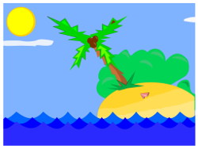

Ando Landy

Mon experience
- Depuis 2002 jusqu'a ce jour :Graphist amateur.
- De 2010 a 2013 : Prise en main de ma vie en tant qu'homme Responsable.
- De 2013 a 2015 : Pause pour pouvoir construire une avenir pour mes futur ancetres.
- De 2015 a 2018 : Remise en question de mes choix pour une amelioration de ma vie.
Mes competences
- Mechanique
- Electricite
- Electronique et Informatique
- Programmation
- Observation
Ma formation